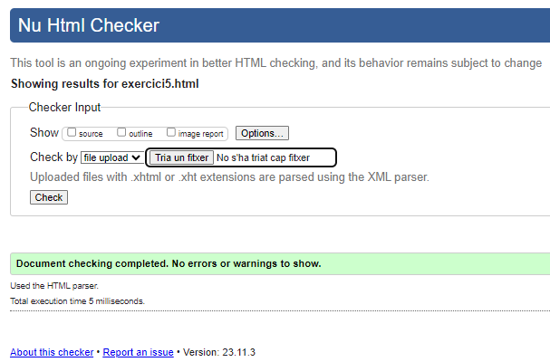

Galetes simples
Ingredients
- 1 tassa (2 barres) de mantega sense sal, a temperatura ambient
- 1 tassa de sucre
- 1 ou
- 1 culleradeta d'extracte de vainilla
- 3 tasses de farina per a tot ús
- 1/2 culleradeta de sal
Instruccions
- Precalfa el teu forn a 180 °C.
- Cobrir una safata per a enfornar amb paper pergamí o greixa-la lleugerament.
- En un bol gran, bat la mantega i el sucre fins que la mescla estigui suau i cremosa.
- Agregar l'ou i l'extracte de vainilla al bol i continua batent fins que estiguin ben combinats.
- Agregar la farina i la sal al bol i barrejar fins que la massa estigui uniforme.
- Prendre petites porcions de massa i forma boletes de la mida duna nou. Col·loca-les a la safata per coure, deixant espai entre cada galeta.
- Aplanar les galetes, podeu utilitzar la base d'un got per a aquesta tasca.
- Enfornar les galetes al forn preescalfat durant 10-12 minuts, o fins que les vores estiguin lleugerament daurades.
- Deixeu que les galetes es refredin a la safata durant uns minuts abans de transferir-les a una reixeta perquè es refredin completament.
Tornar a pàgina principal
